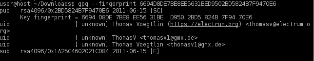
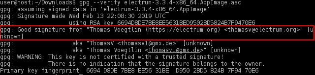
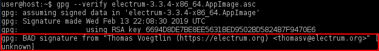

We believe security software like Whonix needs to remain Open Source and independent. Would you help sustain and grow the project? Learn more about our 14 year success story and maybe DONATE!
How-to: Use Electrum Bitcoin Wallet in Whonix - Manual Installation
Manual installation from upstream (electrum.org) of Electrum AppImage.
Introduction
See Electrum wiki page for introduction and warnings!
Primarily refer to the Electrum wiki page! Use this page only in case newer versions of Electrum are desired!
 Prerequisite knowledge: refer to the Frozen Packages and Application Specific Update Indicators entries in
the Operating System Software and Updates chapter.
Prerequisite knowledge: refer to the Frozen Packages and Application Specific Update Indicators entries in
the Operating System Software and Updates chapter.
 COMMUNITY SUPPORT ONLY : THIS WHOLE WIKI
PAGE is only supported by the community. Whonix
developers are very unlikely to provide free support
for this content. See Community Support for further information,
including implications and possible alternatives.
COMMUNITY SUPPORT ONLY : THIS WHOLE WIKI
PAGE is only supported by the community. Whonix
developers are very unlikely to provide free support
for this content. See Community Support for further information,
including implications and possible alternatives.
Install Electrum
Installation Steps
Note: The following instructions should be applied
in Whonix-Workstation™ (Qubes-Whonix™:
anon-whonix).
1
2 Import the gpg public key of Electrum developer Thomas Voegtlin. [1]
- Digital signatures are a tool enhancing download security. They are commonly used across the internet and nothing special to worry about.
- Optional, not required: Digital signatures are optional and not mandatory for using Whonix, but an extra security measure for advanced users. If you've never used them before, it might be overwhelming to look into them at this stage. Just ignore them for now.
- Learn more: Curious? If you are interested in becoming more familiar with advanced computer security concepts, you can learn more about digital signatures here: Verifying Software Signatures
Securely download the signing key.
scurl-download https://raw.githubusercontent.com/spesmilo/electrum/master/pubkeys/ThomasV.asc
Display the key's fingerprint.
gpg --keyid-format long --import --import-options show-only --with-fingerprint ThomasV.asc
Verify the fingerprint. It should show.
Note: Key fingerprints provided on the Whonix website are for convenience only. The Whonix project does not have the authorization or the resources to function as a certificate authority, and therefore cannot verify the identity or authenticity of key fingerprints. The ultimate responsibility for verifying the authenticity of the key fingerprint and correctness of the verification instructions rests with the user.
At the time of writing, the output is identical to the following image.
Figure: Fingerprint Verification

Key fingerprint = 6694 D8DE 7BE8 EE56 31BE D950 2BD5 824B 7F94 70E6
The most important check is confirming the key fingerprint exactly matches the output above. [2]
 Warning:
Warning:
Do not continue if the fingerprint does not match! This risks using infected or erroneous files! The whole point of verification is to confirm file integrity.
Add the signing key.
gpg --import ThomasV.asc
3 Download the Electrum AppImage.
Note: At the time of writing, electrum-4.7.0 was
the latest stable release. Before starting the Electrum download, browse
to electrum.org/#download
to verify the correct file path. Then download the file with scurl. [3]
scurl-download https://download.electrum.org/4.7.0/electrum-4.7.0-x86_64.AppImage
4 Check the Electrum AppImage is not corrupted after download. [4]
To check the Electrum AppImage, run.
file electrum*.AppImage
The following output indicates a corrupted and/or non-existent AppImage file.
electrum-4.7.0-x86_64.AppImage: HTML document, ASCII text, with very long linesIn that case, delete the file and try downloading the AppImage again.
5 Download the corresponding gpg signature.
It is necessary to verify the integrity of the AppImage with the correct signature.
Note: If users downloaded a later Electrum version at step 3, then modify the following command to match the corresponding signature file. [5]
scurl-download https://download.electrum.org/4.7.0/electrum-4.7.0-x86_64.AppImage.ThomasV.asc
6 Verify the integrity of the AppImage.
Note: This command must be run in the same directory as the downloaded AppImage and signature.
gpg --verify electrum-4.7.0-x86_64.AppImage.ThomasV.asc electrum-4.7.0-x86_64.AppImage
If the file is verified successfully, the output will include
Good signature, which is the most important thing to
check.
Figure: Good Signature [6]

gpg: WARNING: This key is not certified with a trusted signature!
gpg: There is no indication that the signature belongs to the owner.This message does not alter the validity of the signature related to the downloaded key. Rather, this warning refers to the level of trust placed in the Whonix signing key and the web of trust. To remove this warning, the Whonix signing key must be personally signed with your own key.
If the following "gpg: BAD signature" message appears, the AppImage has been corrupted or altered during the download process.
Figure: Bad Signature

In this event, delete both the AppImage and signature and either wait
10-15 minutes for the Tor circuits to change, or open up the Nyx Tor Controller in
Whonix-Gateway™ (Qubes-Whonix: sys-whonix) and type "n"
to create new Tor circuits. Wait for a random period of time before
repeating the steps to download the AppImage and signature.
7 Change file permissions.
Make the Electrum AppImage executable.
chmod +x electrum-4.7.0-x86_64.AppImage
8 Done.
The installation of the Electrum AppImage has been completed.
Start Electrum
 Users should create a wallet with a strong password!
Users should create a wallet with a strong password!
Please refer to the official documentation at docs.electrum.org for comprehensive instructions, as well as more advanced topics like Cold Storage of private keys.
To start Electrum on all platforms, run.
./electrum-4.7.0-x86_64.AppImage
Qubes-Whonix users are recommended to configure a Split Bitcoin Wallet to better protect their private keys. To protect against identity correlation through Tor circuit sharing, follow the instructions below (see Stream Isolation for more information).
Electrum: First Run
 These steps enable Stream
Isolation for the Electrum application.
These steps enable Stream
Isolation for the Electrum application.
1 Configure a manual server connection.
When Electrum is started for the first time, users are met with the
prompt: "How do you want to connect to a server?".
Choose Select server manually and press
Next.
Figure: Server Setting

2 Change the proxy settings.
The necessary settings are:
- Proxy:
SOCKS5 - Host:
10.152.152.10 - Port:
9111
Press Next and the application should be fully
functional.
Figure: SOCKS5 Proxy Configuration

Note: If Electrum is already set up but stream
isolation was not enabled, then navigate to Tools →
Network in Electrum to bring up the server and proxy
settings.
3 Done.
Electrum first run stream isolation configuration steps have been completed.
Add Application Launcher to Start Menu
 This step is optional.
This step is optional.
1. Create folder
~/.local/share/applications.
mkdir -p ~/.local/share/applications
2. Create a new file
~/.local/share/applications/electrum.desktop using an
editor.
mousepad ~/.local/share/applications/electrum.desktop
3. Paste the following contents.
[Desktop Entry] Type=Application Exec=/home/user/electrum-4.7.0-x86_64.AppImage Name=electrum Categories=Other
4. Save the file.
5. Done.
The procedure is now complete.
6. Start using the launcher.
The launcher can be found here:
Start Menu → Other →
electrum
Donations
After installing Electrum, please consider making a donation to Whonix to keep it running for years to come.
 Donate Bitcoin (BTC) to Whonix.
Donate Bitcoin (BTC) to Whonix.
1HeXtk2iEXSeLr7WhVeCmWgHDw3oE2PKTY

Footnotes
- https://github.com/spesmilo/electrum/issues/4789
- Minor changes in the output such as new uids (email addresses) or newer expiration dates are inconsequential.
- To find the correct AppImage download:
"Right-click"AppImage→"Select"Copy Link Location→"Append"toscurlcommand. - Due to occasional DDoS attacks.
- To find the correct signature file download:
"Right-click"signature→"Select"Copy Link Location→"Append"toscurlcommand. gpg: Signature made Mon 19 Jul 2021 02:22:33 PM EDT gpg: using RSA key 6694D8DE7BE8EE5631BED9502BD5824B7F9470E6 gpg: Good signature from "Thomas Voegtlin (https://electrum.org) <thomasv@electrum.org>" [unknown] gpg: aka "ThomasV <thomasv1@gmx.de>" [unknown] gpg: aka "Thomas Voegtlin <thomasv1@gmx.de>" [unknown] gpg: WARNING: This key is not certified with a trusted signature! gpg: There is no indication that the signature belongs to the owner. Primary key fingerprint: 6694 D8DE 7BE8 EE56 31BE D950 2BD5 824B 7F94 70E6
Categories: Documentation